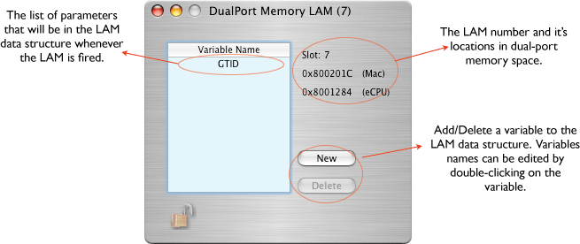
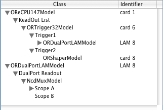

The dual-port/Mac Look-At-Me (LAM) can only be be placed in a generic SBS/Bit3 controller object. The Icon looks like this:  . Here is its dialog:
. Here is its dialog:

The LAM object is used in conjuction with an eCPU object to provide a signaling and data transfer mechanism between the Mac and an eCPU. Note the following example readout list:

Note LAM 8 has been placed under the OReCPU147Model/ReadOut List/ORTrigger32Model/Trigger1 item and also at the top-most level of the list. When the ORTrigger32Model object has an event on its trigger1 input, it loads trigger specific data into the LAM's data structures in the dual-port memory and the LAM is 'fired'. When the Mac processes the LAM at the top-most level in the list, the data associated with each variable is packaged into a data dictionary and passed on to the next object in the list. In this case, the first variable is labeled as 'GTID', and sent on to the NcdMuxModel. Also note that you need to know what each object can provide and what each object is expecting, in this case you have to know that the trigger object can provide gtid values and the mux object requires that the data be labeled 'GTID'. If a LAM is used with a another set of objects, the labeling would be different.